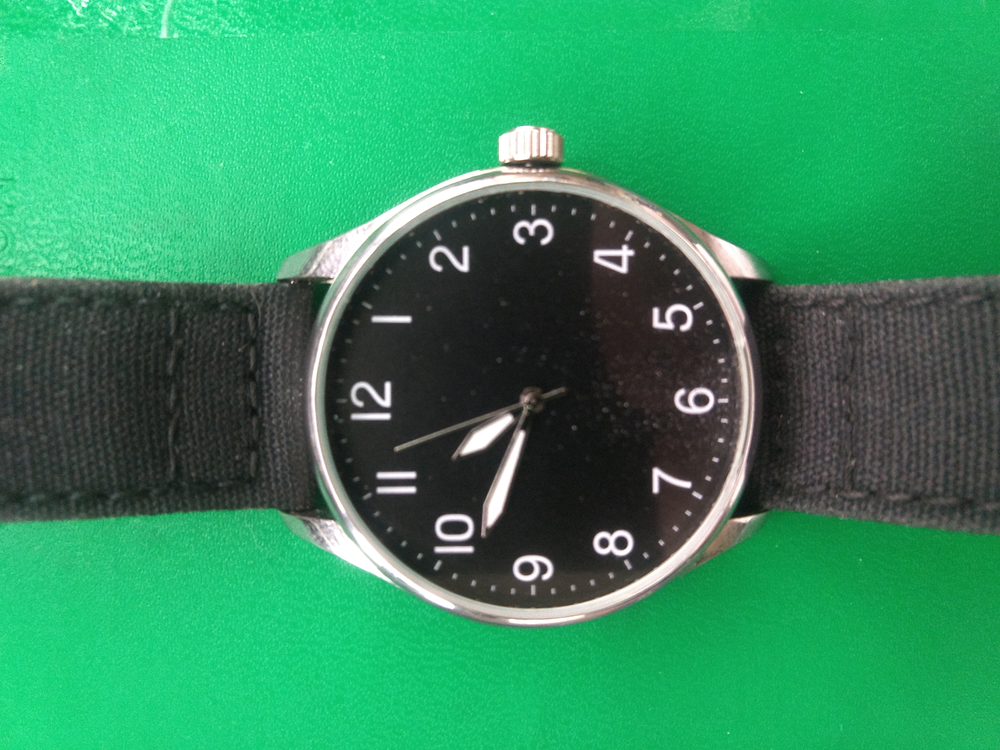

When I was a kid, I didn't tend to wear a watch, with the exception of Boy Scout camp. I needed to know the time then, and there aren't any wall clocks outside, unfortunately. I would say we should fix that, meaning it in a tongue-in-cheek way, but I know somebody would take it seriously and I do not want that.
Later on, I got my Zune HD, that showed the time just fine, then a cell phone. Then came smartwatches, and I started wearing a watch all the time. I was constantly frustrated that all of the smartwatch faces seemed to be analog, seeing limited options for digital. Then I moved back to dumb watches, but this time wearing them everywhere. If you're interested in the full story, check out this post that I'm also posting today as a bonus. Digging it up was part of the inspiration for this post.
It was 2019 when I finally decided to start wearing an analog watch on purpose.
From Hate to Great
In the old days, I always got frustrated when someone asked the time and I couldn't come up with a precise answer quickly. I'd stare at the dial, blankly say "umm..." then spit out a number that was far too accurate and probably should have been generalized a bit. However, I got asked this a lot less once I left college, so it was less of a priority. Also, I finally decided that precision like that wasn't a flex. So, I went from caring that I had digital on my wrist, to not being super concerned one way or the other.
The first reason I started to care about wearing analog was style. Digital watches tend to be pretty ugly, and while I won't say that I have the best fashion sense or anything, I appreciated the aesthetics of a physical dial even before I figured out their practical advantage.
However, when I saw this video on Technology Connextras I virtually stopped wearing my digital watches entirely, until my primary daily wear watch stopped. I'll get into that in a minute.
I'll sum up the video by saying that the hands on the clock act like a pie chart, showing progression through time rather than a numerical representation of progression through time. It's basically one step closer to the actual passage of time than a number.
The top comment on the video almost does a better job of describing this effect, quoting (supposedly) Douglas Adams writing to his editor in 1992:
"(...) there is something inherently ridiculous about digital watches (...) Digital watches came along at a time that, in other areas, we were trying to find ways of translating purely numeric data into graphic form so that the information leapt easily to the eye. For instance, we noticed that pie charts and bar graphs often told us more about the relationships between things than tables of numbers did. So we worked hard to make our computers capable of translating numbers into graphic displays. At the same time, we each had the world’s most perfect pie chart machines strapped to our wrists, which we could read at a glance, and we suddenly got terribly excited at the idea of translating them back into numeric data, simply because we suddenly had the technology to do it..."
I haven't checked this to make sure it's really Adams, but I don't think I have to given how much he tended to write in digital watches while talking about absurd little humans.
I don't buy digital watches anymore.
This is what really prompted the article.
Back in 2019 when I was first buying an analog watch for the purpose of it being an analog watch, I did my usual thing and kept to an extreme budget. I don't like to spend any more than I have to on basically anything, and I want it to last for as long as is humanly possible. If I can make a $1 tool last my lifetime, that's a win in my books. So, naturally, I bought a couple of white-box $10 watches. One of these watches had a larger dial* and was fairly minimal looking, but it was kind of big and the strap was uncomfortable. I decided to reserve this for special occasions.
The other watch was something fairly special though, as far as style and form go. It had a smaller dial that fit very nicely on my wrist, with a nylon weave band. Its steel housing developed this wonderful wear pattern over time that made it look like it was designed to look worn, like an old tool. The tarnish around the outside showed fabulously when caught in the right light, but it didn't look out of place either. Furthermore, it disappeared on my wrist, it was insanely comfortable to wear compared to what I was used to up to that point. So, it was my daily driver for a couple of years.
This is where I caution you not to buy something like that, though, since at some point in early 2022 it started to get stuck whenever the seconds hand hit the 52 second mark. It wouldn't do this every time, but when it did it would lose track of time. This erratic drifting issue made it a lot less useful. Here's a picture of it, stopped and mostly reassembled:

A lot of people (myself included at the time of purchase) would have just said something like "it's so cheap you could just buy another one!" but there's a few problems with this. Firstly there's waste. I tried to figure out a way to even look at the movement to see what was going wrong, but as far as I can tell it's welded plastic, meaning I'll never get it back together.
In addition, part of its charm was the wear it was developing, and I'd have to start that all over again.
Just as importantly, I'd have to go buy another one. I mentioned this before, but I don't particularly like buying things.
I'll mention for the sake of fairness that the band had started to fall off, and it was after it had fallen earlier in the day that the sticking issues started to show up. I wound up missing my train over that, which fortunately wasn't a huge deal since it was the end of the day, not the beginning. However, I should have at least tried replacing the pins that hold the band in place first, and I didn't. That said, it's also possible that the lugs had started to become worn, in which case the pins wouldn't have helped anyhow.
Lately, though, I've missed my old analog watch, so I did two things. Firstly, I bought some smaller Casio analogs online. I've had fantastic luck with their digital watches so far, and I've heard rave reviews about their analog ones as well. As a bonus, they're also cheap! You can get a Casio analog for about the same price as a Casio digital, they start around $13-$15 at the time of writing. Again, I bought two of them, something minimal, and something rugged. Their model numbers are insane so I won't list them here.
The second thing that I did was try to swap the watch bands on my cheap watches, to see what effect that would have. I never checked until now, but it turns out that one of them uses an 18mm band, and the other a 20mm band, so that was out. However, it occurred to me that my old Asus Zenwatch used a 20mm band, as did my Pebble. The stock band on the Zenwatch broke about a year after I bought it, and I replaced it with a canvas band I found online for $20. I overpaid for it, but it's wonderfully constructed and very comfortable. Lo and behold, I've been wearing the watch for a couple of days now, and it's pretty comfortable. The band even matches, more or less:

Admittedly, it's a lot closer to a match in person.
Lessons Learned with Cheap Analogs
I would still recommend a very cheap digital watch. Not much can fail on those, since they're solid-state. However, with an analog watch, buy a name brand. I'll probably get destructive on my old watch out of curiosity, but I have a sinking feeling there's going to be a broken part in there. Don't miss your train over that.
With all watches, if you don't like the comfort of the watch, swap the band out for one that's a bit more flexible, there's a good chance it'll feel a lot better after that. I wound up avoiding the larger watch because the two-piece band it came with was stiff as a wet piece of plywood, and while my tastes have moved on aesthetically since when I bought it, I appreciate having it around all the same at this point.
Another good argument for name brands can be seen in the second photo. You'll notice what looks like some dirt on the lower half of the dial. That wasn't there when I bought the watch, and it's under the crystal.
A lot of people will also tell you that acrylic crystals are less durable than mineral or sapphire crystals, but honestly none of my watches have gotten notably scratched at all, so bear in mind your wear level on things before making that a sticking point when buying a new watch.
Finally, wear an analog watch if you can. I would encourage you to try it just to see if it makes the difference to you that it does for me, but I honestly tell time better with one. I'm late for things less often, and I misjudge how long it will take me to do things and how long I have less often. Just skip the $10 white box ones, lest you find you like it only to have it die.
* You'll want to look up watch terminology if you're already lost. I learned it as a kid from a build-it-yourself watch kit that broke within a week, but if you weren't lucky enough to have one of those, no matter how long it ultimately lasted, knowing the terms will help you should you decide to comparison shop. It will also help you read this article.